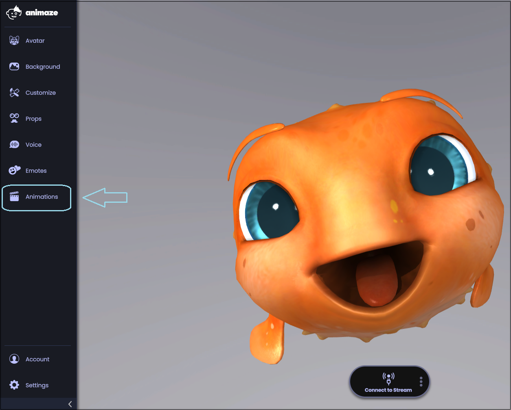
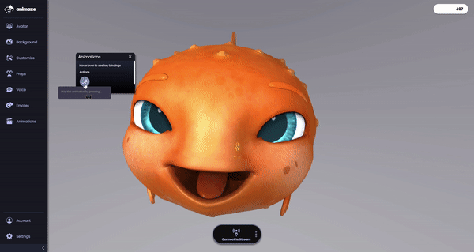

アニメーションと特殊ポーズとは何ですか(デスクトップ版)?
2Dと3Dの両方のアバターには、一連のアニメーションとポーズが設定されていて、キーを押すことでトリガーされます(通常はQ、W、E、R、Tキーが使用されます)。
キーを押すと、特殊アニメーションが再生されます。アニメーションの再生が終了すると、アバターは待機ポーズに戻ります。多くのアバターには、手を振る、親指を上げるなどの基本的な特殊アニメーションのセットが組み込まれています。いくつかのアバターには特殊アクション(子豚のハワードの風船アニメーションなど)が組み込まれています。
特殊ポーズはアバターの表情やポーズを変更します。特殊ポーズをトリガーしたキーをもう一度押されるまでポーズは継続されます。例えば、あるLive2Dアバターにうれしい表情から悲しい表情に変化させる特殊ポーズが組み込まれている場合、一度トリガーされると、同じキーをもう一度押すまでアバターは悲しい表情をし続けます。
特殊アニメーションまたは特殊ポーズをトリガーする方法:
1.「アニメーション」アイコン をタップします。
-
アニメーションメニューが開きます。

2.利用可能なアニメーションを1つクリックするか、対応するキーを押します。

プロのアドバイス:動画の録画時またはストリーミング配信中にアニメーションを使ってみましょう。